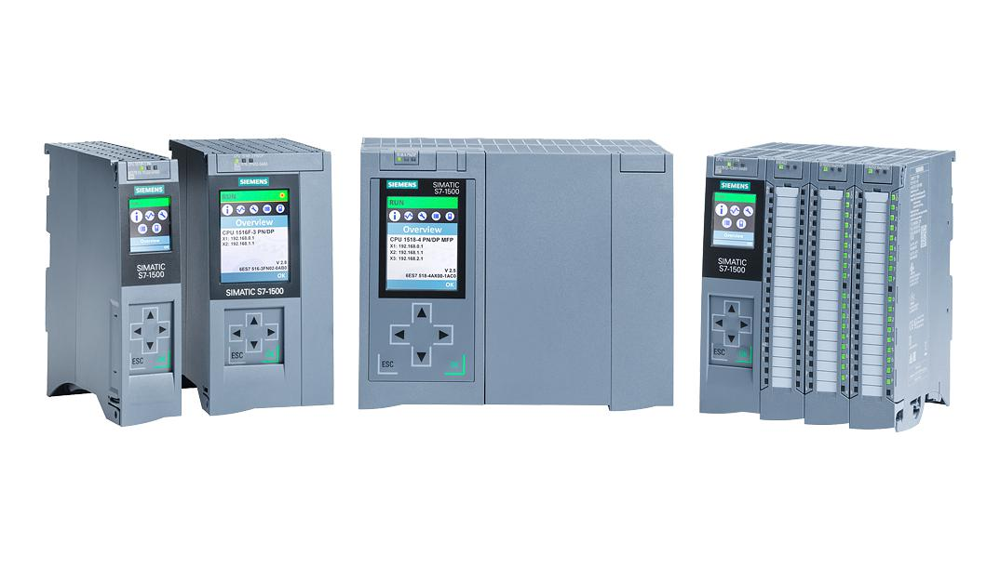
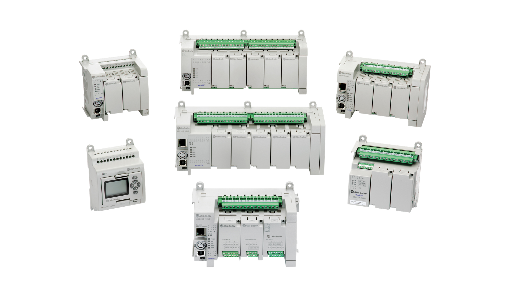
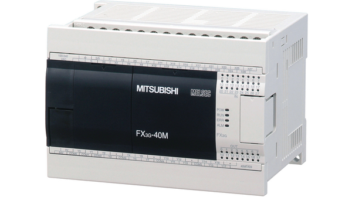

Siemens SIMATIC PLCs: Empowering Industrial Automation
Siemens SIMATIC PLCs are the driving force behind industrial automation. With robust control systems, these PLCs enhance efficiency, productivity, and innovation across industries. They excel in performance, scalability, and versatility, making them ideal for various automation needs.
SIMATIC PLCs boast powerful processors and high-speed communication interfaces, effortlessly handling complex control tasks. They support modular expansion and seamless integration with other devices and systems, facilitating comprehensive control and monitoring.
Incorporating advanced features, SIMATIC PLCs revolutionize industrial automation. Real-time monitoring and predictive maintenance capabilities minimize downtime, while high-speed motion control ensures precision in robotics and CNC machines. The PLCs embrace Industry 4.0 and IoT concepts, enabling cloud connectivity for smart manufacturing and data-driven decision-making.
Reliability and safety are paramount, and Siemens understands this. SIMATIC PLCs undergo rigorous testing, comply with international safety standards, and offer built-in fail-safe functions and communication protocols.
SIMATIC PLCs find applications in diverse industries, optimizing production lines, managing infrastructure, and enhancing energy consumption efficiency.
In conclusion, Siemens SIMATIC PLCs are the backbone of industrial automation, offering performance, versatility, and innovative features. They empower companies to optimize processes and embrace digital transformation, unlocking productivity and competitiveness in today's industrial landscape.

Enhance Industrial Automation Efficiency with Allen-Bradley PLCs
In today's rapidly evolving industrial landscape, the need for efficient and reliable automation solutions has never been greater. Allen-Bradley Programmable Logic Controllers (PLCs) have emerged as an industry-leading choice, revolutionizing the way industrial processes are controlled and monitored. With their advanced features and robust performance, Allen-Bradley PLCs have become an indispensable tool for businesses across various sectors.
Allen-Bradley PLCs offer unmatched versatility, accommodating diverse automation requirements. They support a wide range of communication protocols, enabling seamless integration with other automation components and systems. Whether you need to control machinery, manage production lines, or monitor complex processes, Allen-Bradley PLCs provide the flexibility to handle different applications with ease.
Industrialenvironments demand rugged and reliable solutions, and Allen-Bradley PLCs excel in these areas. Built with high-quality components and designed to withstand harsh conditions, they ensure uninterrupted operation even in demanding settings. From extreme temperatures to excessive vibrations, Allen-Bradley PLCs deliver consistent performance, reducing downtime and enhancing overall productivity.
Allen-Bradley PLCs are equipped with advanced features that empower businesses to optimize their automation processes. With sophisticated programming capabilities and extensive memory capacities, these PLCs can handle complex logic and data manipulation tasks.

Streamlining Automation Efficiency with Mitsubishi Electric PLCs
Mitsubishi Electric Programmable Logic Controllers (PLCs) are renowned for their precision and reliability in industrial automation. These cutting-edge control systems empower businesses to enhance productivity and operational efficiency. With a history of innovation, Mitsubishi Electric PLCs are trusted as industry leaders for diverse automation needs.
Mitsubishi Electric PLCs excel in demanding industrial applications. With high-speed processing capabilities, they offer real-time control, seamless integration, and accurate data acquisition. From small-scale machinery to large manufacturing plants, these PLCs cater to various industries, including automotive, energy, food and beverage, and pharmaceuticals.
Mitsubishi Electric PLCs provide user-friendly programming environments. Intuitive software tools and comprehensive libraries streamline the programming process, reducing development time. Supporting multiple programming languages, such as ladder logic and structured text, they adapt to specific project requirements.
Built to withstand harsh conditions and high temperatures, Mitsubishi Electric PLCs ensure uninterrupted operation. This reliability minimizes downtime, enhances production efficiency, and improves overall equipment effectiveness (OEE).
Mitsubishi Electric PLCs provide exceptional performance, intuitive programming, reliability, and seamless connectivity. Implementing these PLCs enables organizations to optimize processes, improve efficiency, and gain a competitive edge in industrial automation. Whether for small-scale projects or large-scale manufacturing facilities, Mitsubishi Electric PLCs deliver the precision and reliability necessary for automation success.
